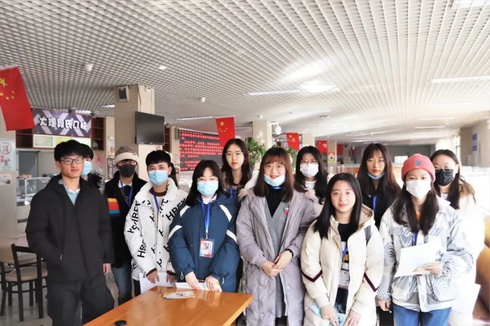
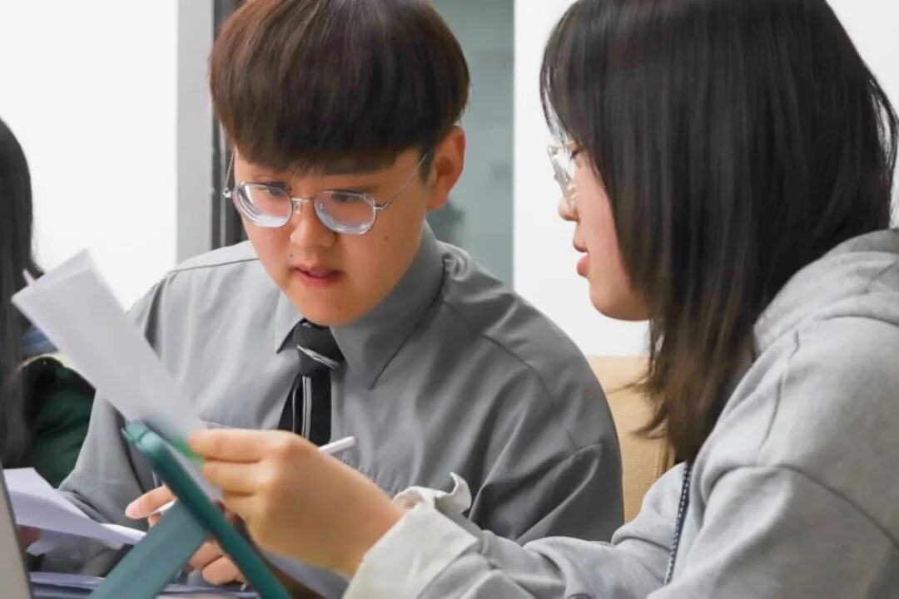
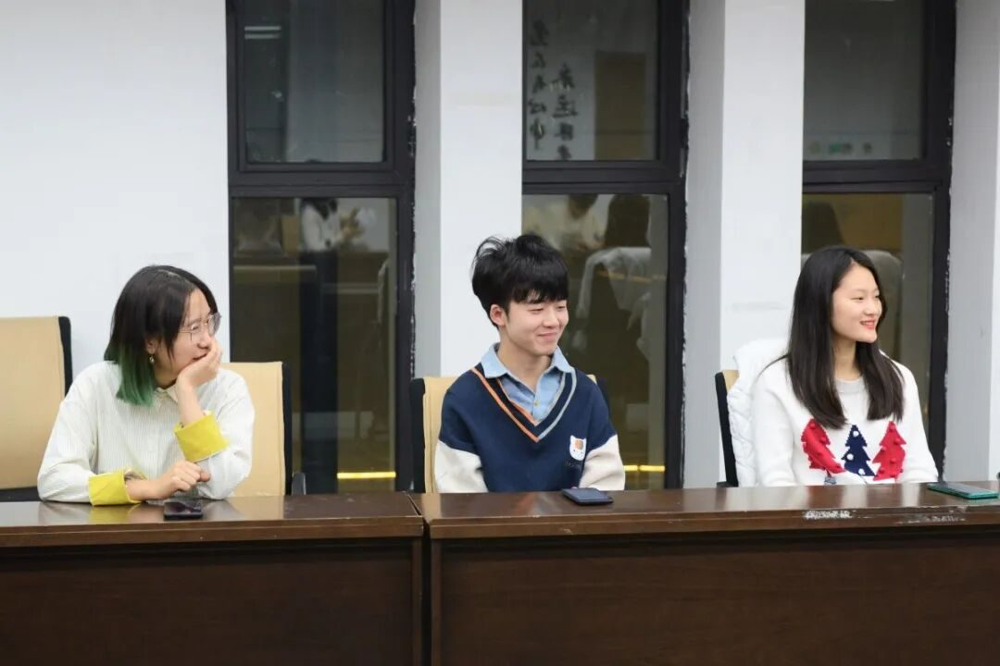
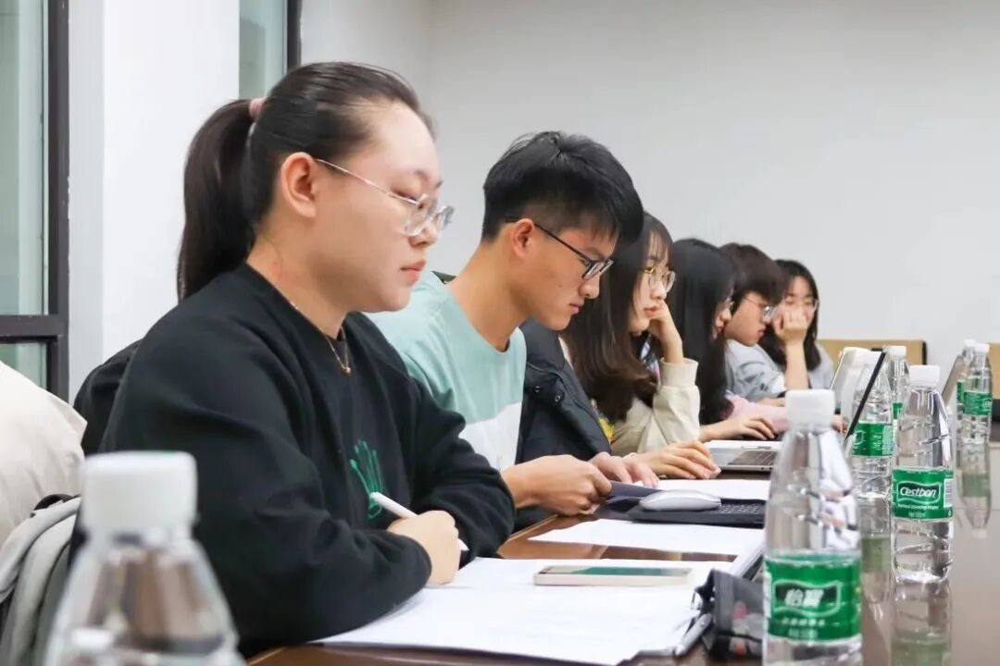

【煌然成篇·二】遇见，即是上上签

午后的温暖还没离场初冬的阳光，
穿过空无一人的走廊，
打开门看到早已就绪的你们，
其实时间还些许的早着。

你们今天真好看，
也许是为了面试整理了头发，
面试过程很短很短，
脑海中你们侃侃的言语却很长很长。
就像我当时决心加入行者无疆的那天，
也许是为了面试整理了头发，
两边的头发很短很短，
中间的却很长很长，
蓬蓬松松很是精致，
就像今天的你们一样。
拿着电脑看着一摞摞简历文件，
再看看你们，
决心从这一刻开始记录我们的相遇。
谁知道会写下些什么呢？
毕竟还有那么长的路要与你们一同去走，
与行者们一起去走。


每一个有实践任务的早上都是格外困人的，
想把眼睛就那样闭上，
却出奇的没什么睡意。
打开电脑边茉莉口味的糖果，
包装纸哗哗啦啦，
吵闹着那一份沁着清甜，
又不乏一抹苦的滋味。
边感受着敦煌无限的魅力，
边写着些无厘头的行间文字，
边时不时的望一眼你们。
可以望得到，
毕竟两个屏幕的距离也没有多远。关于文化调研没有太多想说，
就像是读后感观后感一样，
不程式化的东西一个人一个理解。
相比这些我更钟爱的，
是那些未至不苛求，
离开不挽留的相遇，
也就是和你们的相遇。
这些美好不会给予我多么惊人的馈赠，
而恰是那些小小的，
微不足道的，
就像是忙活到大半夜，
几小只坏笑着边催着还没写完的文案，
边说着“不行还有我呢”的，
不经意间的温情。
说困难，
都是不值一提的，
甚至没有关电脑是屏幕压到手指那种痛来的深刻。
就像是手里握着沙子，
这种痛一步一步撬开指缝，
让坚持和勇气偷偷都溜走。
但总会留下些什么，
是礼物，
也是一份记忆，
与你们的记忆。
可别忘了也送给你们一份啊。
有人说这一场文化之旅像是一场电影，
叫我来说，
倒不如来的像一首诗一样痛快，
就像我写的一样。
我们的故事是说不尽的，
我错过的与我经历的，
没什么特别的，
不过是都很特别罢了。
除非从当年说起，
时间却是不卖我这份面子的。
“转念想想，又有什么要回忆的呢？”
“我们的故事从明天开始不好么？”
“不回答，那就是好咯？”
“那么，相伴一路的亲爱的行者们。”
“我叫胡至鸿，初次见面，请多关照。”
来源 | 行者无疆实践团
文字 | 胡至鸿
排版 | 吕丰元
审核 | 康艳虎 张清雅
行者无疆实践团
QQ：2758025831

随行者一起认识世界
长按二维码